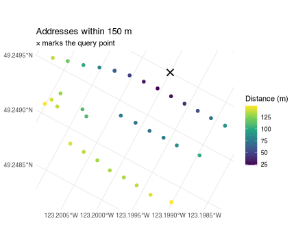

cangeocode reverse geocodes Canadian coordinates against
Statistics Canada’s National Address
Repository (NAR), a national list of civic addresses with
coordinates. The package downloads a NAR release once, imports it into a
local DuckDB database, and then answers
queries from that database — no network access, no per-request rate
limit, and no address ever leaving your machine.
One-time setup
Two things have to be true before the first call.
Point the package at a cache directory.
NAR_CACHE_PATH says where the database files go. It has no
default, and every entry point errors out immediately if it is unset.
Put it in your ~/.Renviron so it survives a restart:
NAR_CACHE_PATH=~/data/narBudget for the first download.
nar_connection() fetches the release from StatCan, unzips
it, and builds the database. That is a 1.7 GB download over a connection
slow enough that the package raises R’s timeout to 20 minutes, and it
lands roughly 5 GB on disk for the 2026-06 release.
Every later call reuses the file and opens instantly. In an interactive
session the first call asks whether you want all of it — see below.
library(cangeocode)
library(dplyr)
con <- open_nar()nar_connection() is both the installer and the accessor:
it downloads and imports on first use for a given version, and simply
opens the file after that. open_nar() calls it and keeps
the connection for the rest of the session, so nothing below has to be
handed a database. It returns the connection too, which is what the
direct database queries further down use.
Even that is optional. reverse_geocode() and
geocode() open a connection themselves when they are not
given one, and keep it open the same way — the first call is half a
second slower and every call after it is not. open_nar() is
worth calling to do the opening at a moment of your choosing, or to name
a release other than the latest. close_nar() ends it, and
every entry point still takes an explicit con if you would
rather own the connection yourself.
Downloading one province instead of the country
The StatCan release is one zip whose member files are split by province, and the server honours HTTP range requests. So the package can read the archive’s own index — a few kilobytes, no data transfer — and then fetch only the members a province needs:
pei <- nar_connection(provinces = "PE")That is 10 MB and about 40 seconds for a working Prince Edward Island geocoder. British Columbia is 192 MB, Ontario 552 MB, the whole country 1,666 MB.
These are the same NAR rows, not a reduced product: a partial
database returns the same ADDR_GUID and the same
coordinates a national one does. What it does not have is anything
outside its provinces, and geocode() says so —
match_method comes back as not_covered rather
than none, because an Ontario address asked of a PEI
database is not a bad address.
Coverage is recorded in the database and checked before anything is downloaded. Asking for a province you already have downloads nothing; asking for one you do not adds just that province rather than rebuilding.
nar_provinces(pei)
#> [1] "PE"
both <- nar_connection(provinces = c("PE", "NB")) # fetches New Brunswick only
nar_provinces(both)
#> [1] "NB" "PE"Provinces can be named by abbreviation, by full name, or by SGC code,
and provinces = "all" is the whole country.
refresh = TRUE rebuilds whatever coverage the database
already has, so refreshing a British Columbia database does not silently
turn it into a national one.
Reverse geocoding a point
Hand reverse_geocode() a longitude/latitude pair and it
returns every address within the match radius, nearest first.
reverse_geocode(c(-123.2, 49.25), match_radius = 100) |>
select(address, dist, geom_source)
#> # A tibble: 16 × 3
#> address dist geom_source
#> <chr> <dbl> <chr>
#> 1 4176 W KING EDWARD AVE, VANCOUVER V6S1N3 23.5 building
#> 2 4172 W KING EDWARD AVE, VANCOUVER V6S1N3 27.4 building
#> 3 4182 W KING EDWARD AVE, VANCOUVER V6S1N3 32.3 building
#> 4 4166 W KING EDWARD AVE, VANCOUVER V6S1N3 39.6 building
#> 5 4188 W KING EDWARD AVE, VANCOUVER V6S1N3 46.9 building
#> 6 4162 W KING EDWARD AVE, VANCOUVER V6S1N3 54.5 building
#> 7 BSMT-4192 W KING EDWARD AVE, VANCOUVER V6S1N3 64.1 building
#> 8 4192 W KING EDWARD AVE, VANCOUVER V6S1N3 64.1 building
#> 9 4177 DONCASTER WAY, VANCOUVER V6S1W1 70.4 building
#> 10 4158 W KING EDWARD AVE, VANCOUVER V6S1N3 70.5 building
#> 11 4171 DONCASTER WAY, VANCOUVER V6S1W1 71.3 building
#> 12 4169 DONCASTER WAY, VANCOUVER V6S1W1 75.5 building
#> 13 4189 DONCASTER WAY, VANCOUVER V6S1W1 75.6 building
#> 14 4204 W KING EDWARD AVE, VANCOUVER V6S1N3 81.8 building
#> 15 4165 DONCASTER WAY, VANCOUVER V6S1W1 84.3 building
#> 16 4154 W KING EDWARD AVE, VANCOUVER V6S1N3 88.0 buildingdist is in metres. No conversion is
needed: addresses are stored in a projected CRS (Statistics Canada
Lambert, EPSG:3347), so distances come out metric already.
The default radius is 100 m. Widen it when you expect sparse coverage — rural addresses, industrial land — and narrow it when you only want the building you are standing on.
reverse_geocode(c(-123.2, 49.25), match_radius = 25) |>
select(address, dist)
#> # A tibble: 1 × 2
#> address dist
#> <chr> <dbl>
#> 1 4176 W KING EDWARD AVE, VANCOUVER V6S1N3 23.5Coordinates in another CRS
A bare numeric pair is interpreted as EPSG:4326 — the
longitude/latitude that GPS receivers and web maps report. If your
coordinates use a different CRS, name it with crs, or pass
an sf object and let its own CRS speak for itself.
pt <- sf::st_sfc(sf::st_point(c(-123.2, 49.25)), crs = 4326)
reverse_geocode(pt, match_radius = 50) |>
select(address, dist)
#> # A tibble: 5 × 2
#> address dist
#> <chr> <dbl>
#> 1 4176 W KING EDWARD AVE, VANCOUVER V6S1N3 23.5
#> 2 4172 W KING EDWARD AVE, VANCOUVER V6S1N3 27.4
#> 3 4182 W KING EDWARD AVE, VANCOUVER V6S1N3 32.3
#> 4 4166 W KING EDWARD AVE, VANCOUVER V6S1N3 39.6
#> 5 4188 W KING EDWARD AVE, VANCOUVER V6S1N3 46.9Choosing what comes back
output controls the shape of the result.
# A single formatted string for the closest address
reverse_geocode(c(-123.2, 49.25), output = "address")
#> [1] "4176 W KING EDWARD AVE, VANCOUVER V6S1N3"
# One row, every NAR column, for the closest address
reverse_geocode(c(-123.2, 49.25), output = "components") |>
select(CIVIC_NO, MAIL_STREET_NAME, MAIL_MUN_NAME, MAIL_POSTAL_CODE, BU_USE)
#> # A tibble: 1 × 5
#> CIVIC_NO MAIL_STREET_NAME MAIL_MUN_NAME MAIL_POSTAL_CODE BU_USE
#> <dbl> <chr> <chr> <chr> <dbl>
#> 1 4176 KING EDWARD VANCOUVER V6S1N3 2The default, output = "multiple", is the full table of
matches shown above.
When no address falls inside the radius the function warns and
returns NULL, so check for that rather than assuming a data
frame comes back.
result <- reverse_geocode(c(-135, 65), match_radius = 100)
#> Warning in reverse_geocode(c(-135, 65), match_radius = 100): No address found
#> within 100 m radius.
is.null(result)
#> [1] TRUEGetting geometry back
geometry = TRUE returns an sf object
carrying the matched address point, in the database’s storage CRS.
Reproject it with sf::st_transform() if you need something
else.
matches <- reverse_geocode(c(-123.2, 49.25), match_radius = 150,
geometry = TRUE)
sf::st_crs(matches)$input
#> [1] "EPSG:3347"
library(ggplot2)
query <- sf::st_sfc(sf::st_point(c(-123.2, 49.25)), crs = 4326) |>
sf::st_transform(sf::st_crs(matches))
ggplot(matches) +
geom_sf(aes(colour = dist), size = 2) +
geom_sf(data = query, shape = 4, size = 4, stroke = 1.2) +
scale_colour_viridis_c(name = "Distance (m)") +
labs(title = "Addresses within 150 m",
subtitle = "× marks the query point") +
theme_minimal()
Precision: read geom_source before you trust
dist
Not every NAR address has a building point. Where one is missing the
package falls back to the blockface point — the
centroid of one side of a street between two intersections — and records
which was used in geom_source.
tbl(con, "Addresses") |>
count(geom_source) |>
collect() |>
arrange(desc(n))
#> # A tibble: 3 × 2
#> geom_source n
#> <chr> <dbl>
#> 1 building 16157303
#> 2 blockface 1140090
#> 3 <NA> 65083The difference matters. A building point is specific to the address. A blockface point is shared by every address on that stretch of street. Among the addresses that fall back to one, a blockface point stands in for a median of 2 addresses and a mean of 3.9 — and in the worst case 578 of them sit on a single identical coordinate. Where an address has both kinds of point, the median distance between them is 50 m, and the 95th percentile is 331 m.
So a dist of 30 m from a blockface match does not mean
the address is 30 m away — it means the middle of its block is.
Filter when only precise matches will do:
reverse_geocode(c(-123.2, 49.25), match_radius = 150) |>
filter(geom_source == "building") |>
select(address, dist) |>
head(3)
#> # A tibble: 3 × 2
#> address dist
#> <chr> <dbl>
#> 1 4176 W KING EDWARD AVE, VANCOUVER V6S1N3 23.5
#> 2 4172 W KING EDWARD AVE, VANCOUVER V6S1N3 27.4
#> 3 4182 W KING EDWARD AVE, VANCOUVER V6S1N3 32.3A small number of addresses (about 65,000 nationally) have no coordinates at all and can never be returned by a radius query.
Geocoding many points
Nothing special is needed for a batch. reverse_geocode()
reuses the session connection, so the loop below opens the database once
no matter how many points go through it — and would do the same with no
open_nar() above it, opening on the first point and holding
it for the rest.
Versions
NAR is republished periodically.
available_nar_versions() lists what StatCan offers;
nar_connection(version = ...) pins a specific one, keyed by
the path column ("YYYY-MM").
available_nar_versions() |>
select(version, path, Date) |>
head(4)
#> # A tibble: 4 × 3
#> version path Date
#> <chr> <chr> <date>
#> 1 June 2026 2026-06 2026-06-01
#> 2 December 2025 2025-12 2025-12-01
#> 3 July 2025 2025-07 2025-07-01
#> 4 December 2024 2024-12 2024-12-01"latest" is the default. Version lookup checks your
local cache before the network, so naming a release you already have
never touches StatCan — and if you are offline and asked for
"latest", the package warns and falls back to your newest
cached database instead of failing.
Each version is a separate file in NAR_CACHE_PATH, so
keeping two releases around costs two databases’ worth of disk.
refresh = TRUE rebuilds one from scratch.
Where to go next
vignette("geocoding") covers the other direction —
geocode(), which turns an address string into a coordinate
and reports how it was found and what that cost, along with the address
parser behind it and the BC geocoder you can check a result against.
vignette("querying-nar") covers using the database
directly — filtering the full address table with dplyr, joining to
Locations for federal riding and economic region names, and
converting results to sf with
collect_nar().